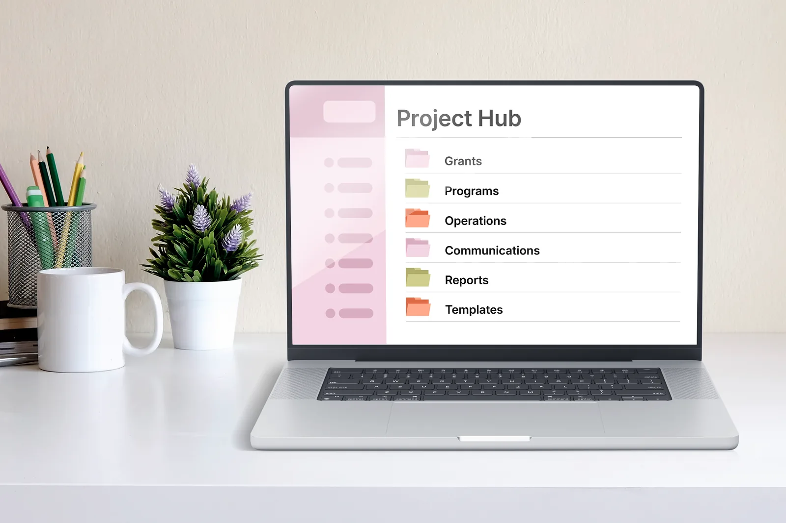
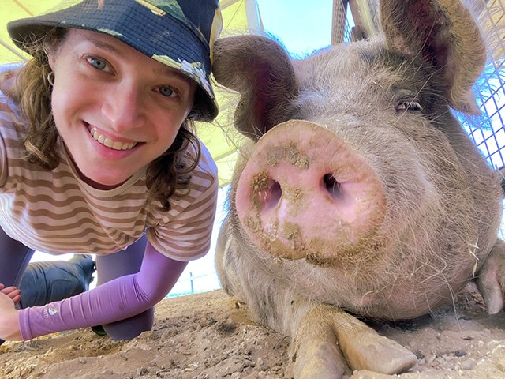

Care Through Touch Institute
Grant Management System
Built a centralized grant pipeline, deadline calendar, funder organization system, and application workflow to make opportunities easier to evaluate, plan, and manage.
Stronger systems. Brighter impact.
Systems for Mission helps nonprofits and mission-driven teams get more capacity from the resources they already have by reducing operational friction and building practical systems their teams can actually maintain.

Familiar challenges. Real impact.
As organizations grow and change, the systems behind the work don’t always grow with them.
None of these problems has to look dramatic to drain capacity. Small points of friction add up, costing staff time, making growth harder, and leaving good people carrying work that better systems could carry for them.
Different organizations. Different needs.
Projects are shaped around where your team is losing the most time, clarity, or capacity.
Make information easier to find, use, and hand off.
Keep important information visible, current, and organized.
Bring deadlines and recurring responsibilities into one reliable system.
Turn important processes into clear, repeatable documentation.
Make website information clearer, easier to navigate, and easier to maintain.
Create stronger systems for opportunities, deadlines, applications, and reporting.
Reduce repetitive work with reusable tools and structures.
Make it easier to collect, organize, and share the information your team needs.
The right systems create breathing room. The question is where to start.
Start with the friction.
Before recommending a project, I take time to understand how your organization actually works: where information lives, how recurring work is managed, what depends too heavily on individual people, and where the biggest bottlenecks are.
The result is a prioritized systems roadmap focused on the areas creating the most friction, risk, or unnecessary workload.
From there, we can tackle projects one at a time based on your priorities, budget, and capacity.
The Systems Assessment can be credited toward your first Systems for Mission project.
A simple, collaborative process.
We begin with the Systems Assessment, a close look at how the work happens today and where it gets stuck.
Together, we choose where to start and agree on a clear scope for the first project.
I design and build the agreed tools, workflows, documentation, and structure.
We test the system together, make adjustments, document what matters, and make sure your team can confidently maintain it.
Selected organizations I’ve supported across operations, grants, communications, programs, and systems.
Real organizations. Real results.
Care Through Touch Institute
Built a centralized grant pipeline, deadline calendar, funder organization system, and application workflow to make opportunities easier to evaluate, plan, and manage.
Buddhist Center of Steamboat Springs
Centralized programming, scheduling, communications, volunteer coordination, and recurring administrative workflows to create greater consistency and reduce administrative load.
Jewish Solar Challenge
Reorganized the website structure, updated page content and organizational information, clarified navigation, and implemented the revised content to make the site easier to understand and maintain.
From people I’ve worked with
“Tali is remarkably efficient and organized, with a real gift for seeing what needs to be done and building systems that make work run more smoothly. She also has a strong eye for graphics and web design, bringing clarity and thoughtful systems thinking to every project.”
Designed for periods of growth and change.
Sometimes you absolutely need the person you’re hiring. But that new team member shouldn’t necessarily have to build every system from scratch while also trying to do the job.
A focused Systems for Mission project can take the project-shaped part of that work off your team’s plate and leave behind infrastructure your staff can keep using.
Thoughtful systems. Practical results.
I’ve spent more than 10 years working across nonprofit and mission-driven organizations in operations, grants, communications, programs, and administration.
I’ve also been the person inside small organizations figuring out how to keep the work moving with limited time, limited resources, and a lot of responsibilities competing for attention.
Over time, I kept noticing the same thing: talented, deeply committed people were spending enormous amounts of energy compensating for systems that hadn’t kept up with the work.
That’s where Systems for Mission came from.
I now focus on finding those points of friction and building practical structures around them so organizations can reduce unnecessary administrative load and keep more time and energy focused on the mission.

If your team is spending too much time holding together processes that could work better, let’s start by figuring out where stronger systems could give some of that capacity back.